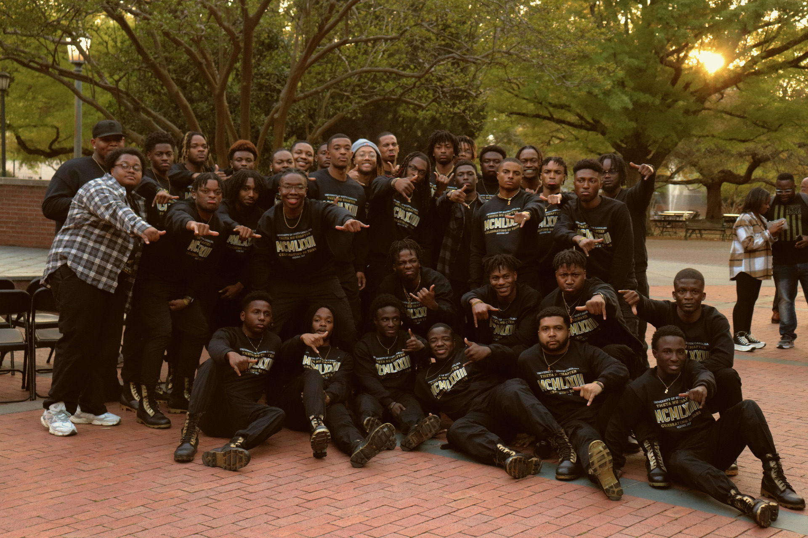
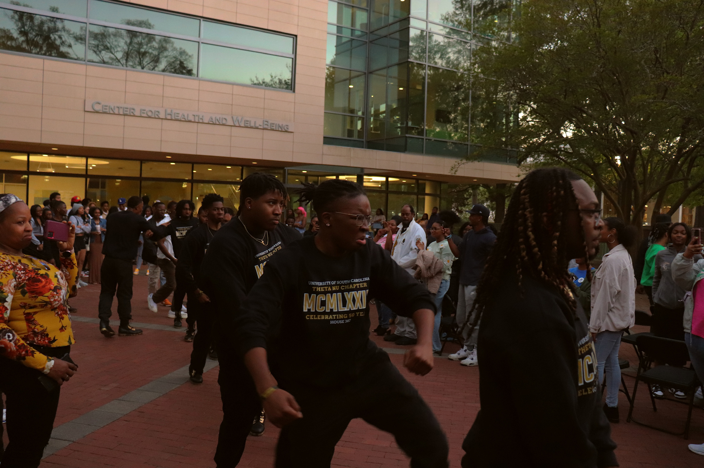
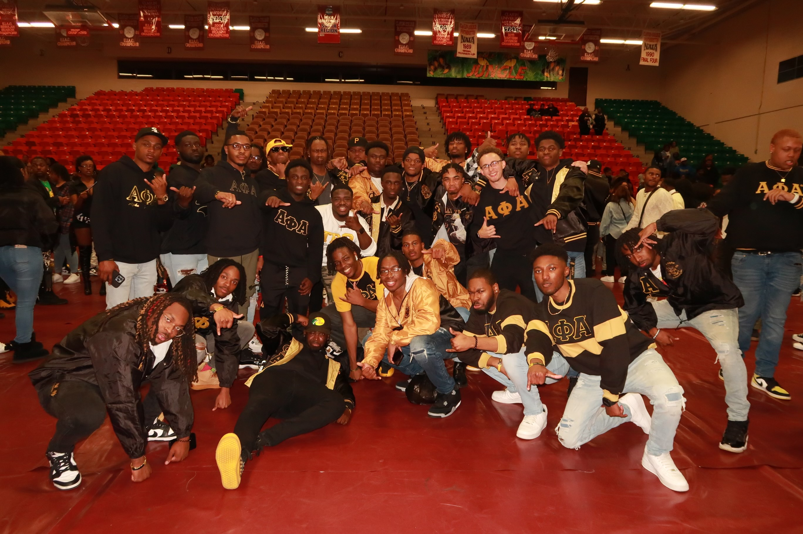

Service
Member of Alpha Phi Alpha Fraternity Inc. The Theta Nu chapter of Alpha Phi Alpha Fraternity Inc. is a social, community service based organization that operates under the tenets of manly deeds, scholarship, and love for all mankind. Since it’s founding on December 4, 1906, Alpha Phi Alpha Fraternity, Inc. has supplied voice and vision to the struggle of African-Americans and people of color around the world. The Theta Nu chapter has been upholding the mission & vision through continuous service to the University of South Carolina and our surrounding communities.


